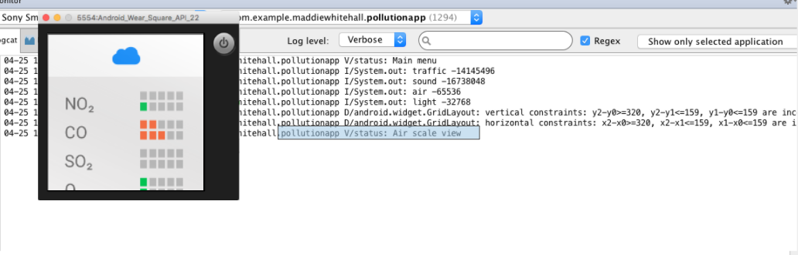
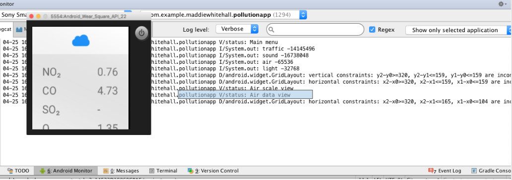
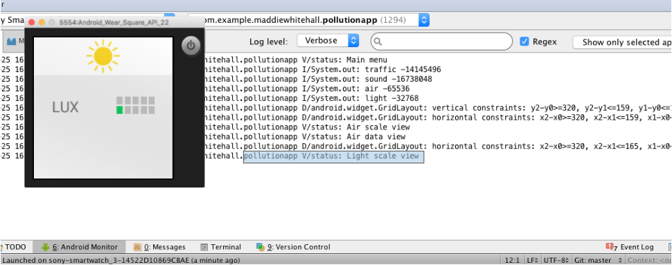
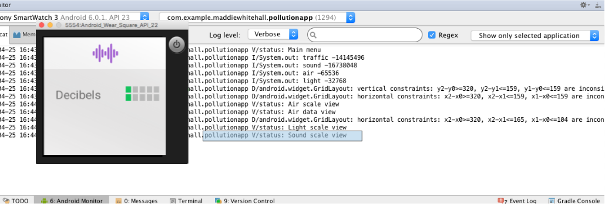
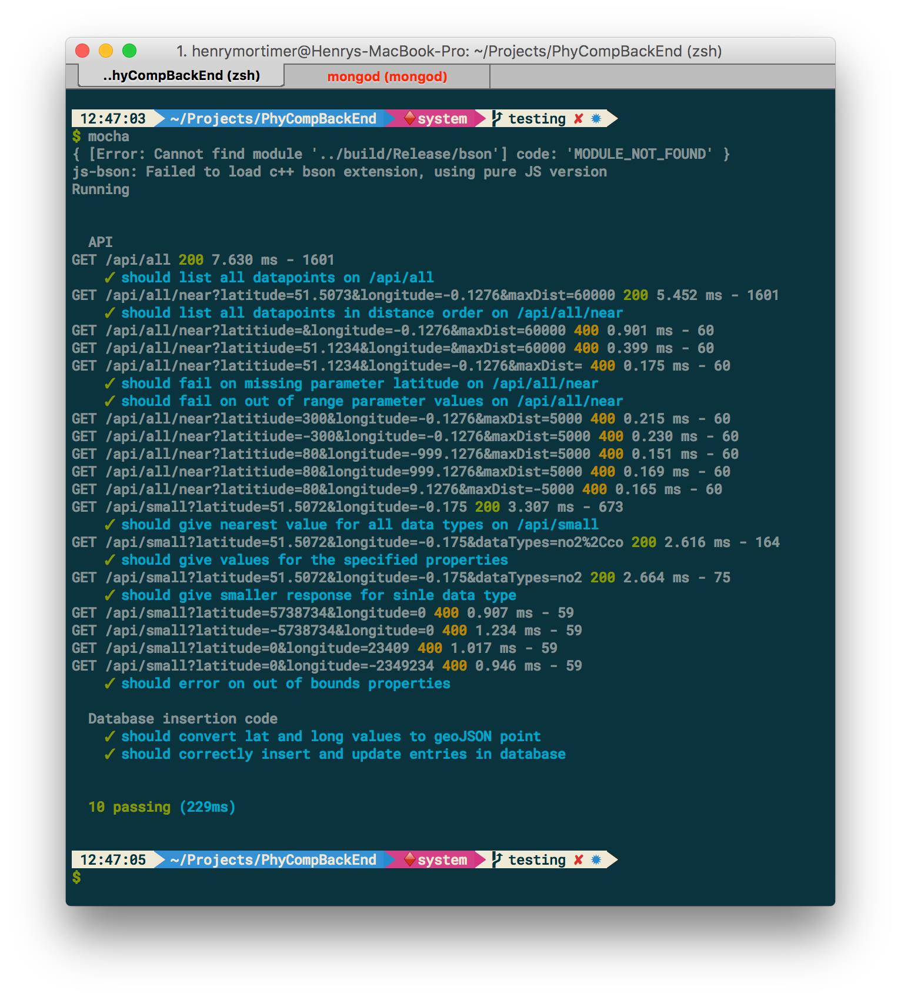

Testing Methods
Smartwatch Application Testing
When it came to testing the UI, as it was mostly a visual confirmation we decided to use manual testing. This included going through each process of the wearable app on the Android Studio ADK and confirming that the response messages that we added into the code corresponded to the actions that were undertaken. For each button pressed a "visual status" was displayed onto the Android Monitor allowing us to ensure that the buttons were doing the correct thing. Some screenshots of our UI testing can be seen below.
Android Studio Testing
   We also tested it on potential users, using an Android wear device. We asked each person who tested it to go through a series of steps and if each step implemented the correct UI change the results appeared to be working as planned.
Manual Testing Method
Written after each step is the ideal outcome
1. Open the City Data Visualiser
2. Tap on each of the none greyed icons in turn (Their corresponding scale pages should become visible)
3. For each scale page, tap the pollutant icon at the head of the page (The raw data values should become visible)
4. When on a pollutant page, swipe across the screen from left to right (This should take you back to the previous page)
5. Close the app and change your location slightly e.g. walk 10m away from your current point (This will count as a location change, new data will be sent and the app will reopen automatically)
This was tested on a small group of people and each time the results were correct and consistent If we were to develop this project further we would have to put the app under a much more scrutinous testing system, checking that the UI has a consistent appearance although it may deployed on a large variety of devices. This would include seeing how robust the UI is to different screen sizes and shapes along with its running on different operating systems.
API Testing
Unit testing is done using Mochajs which you can install with:
npm install -g mocha
We also make use of chaijs and the chaihttp plugin but these will be installed as dependencies.
To run the tests use mocha Mocha will run all files in the test directory. The outputted result will displayed as below:
The testing undertaken uses dummy data (shown below) and tests the functionality of the multiple requests avaiable from the API as well as the standardizing functions used in the schema written to combine the datasets that feed into the program. We used mocha and chai for testing, mocha is responsible for running the tests and the server, has functions that are run before and after tests where we populated the testing database with test data. Chai allows you to write tests that read like plain english.